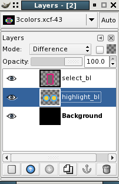
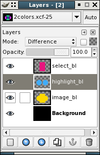

spumux capabilities/limitations
The following info was obtained by trail and error and some guidance from the documentation. Because I
didn't understand everything at first I hope that this might be useful to someone else as well. There
might still be some errors in my interpretation of the specs, so please notify me if that is the case, so
I can make corrections to the page. These examples are only to illustrate the concepts and probably
aren't good realworld examples.
Also remember to turn off any anti-aliasing and use only hard edged brushes - This will ensure you
don't use more colors than intended. I use a very useful plugin for gimp by Jamie Strachan to generate
the images and config file for spumux. You can get it at the gimp
plugin page or directly here.
For more about transparent menus go to this page.
A very common error when using too many colors is something like:
INFO: PNG had 4 colors
INFO: Pickbuttongroups, success with 1 groups, useimg=0
assertion "useimg" failed: file "subgen-image.c", line 726

2 Colors + background
This example uses 2 colors plus the background color for each image. I'm only using the highlight and
select layers in this example to simplify things. I also use an all opaque black background for combining
the layers in difference mode, otherwise the transparent areas in the other layers won't show up.
I combined the layers in difference mode only to get a clearer picture of how many different color
regions there are. As you can see the combined layers image uses 9 different color regions.
All the images are combined as one image when muxed into the mpeg stream and this image can have a
maximum of 4 colors. Usually you want a transparent background color, so that leaves 3 colors to play
with.
These images will cause spumux to exit with an error. Even though each image only uses 3 colors, the
final subpicture will have to use 9 colors.

1 Color + background - 3 layers
This example also uses 1 color plus the background color for each image. The resulting combined image
also only uses 4 different colors, so this will also work in spumux. Note that the extra layer only works
because the shapes are exactly the same. The image layer can also be the same shape as any of the other
two layers for this to work. If the shapes were even one pixel different it will not work.

{kind=link}
{kind=link}
{kind=link}
{kind=link}
{kind=link}
{kind=link}
{kind=link}
{kind=link}
{kind=link}
{kind=link}
{kind=link}